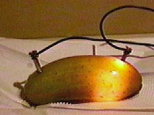
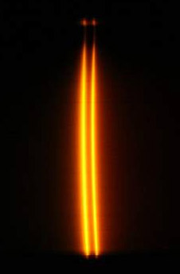

The Electric Pickle
A far-fetched example of a non-ohmic resistor is the electric pickle. A considerable amount of light can be obtained by connecting ordinary household 120 volt AC voltage across a pickle. After the pickling process, there are Na+ and Cl- ions present. The standard explanation is that the electric current excites the sodium ions, producing light similar to
that of a sodium lamp.

Thanks to Brian Lucy for this example. | Currents in ionic solutions are often not linearly proportional to the applied voltage. When Ohm's law is used with ordinary carbon resistors, the ratio of voltage to current is constant, but the variation in light output suggests that this is not the case with the electric pickle.
Warning! The electric pickle is a serious shock hazard! |
From the color, I had presumed that the light from the pickle was at least partly sodium light from the sodium chloride used in the pickling process. But I had no idea that it was such pure sodium light! The spectrum of the electric pickle at right was taken by Benoit Minster of Grenoble, France using a Lhires II spectrograph and a digital camera. It's as pure a sodium doublet spectrum as I get using a sodium lamp! If it weren't for the electric shock hazard posed by the electric pickle, we might suggest them as low-cost sodium light sources! |  |
|
Index |